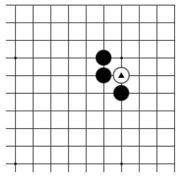
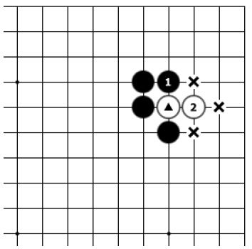
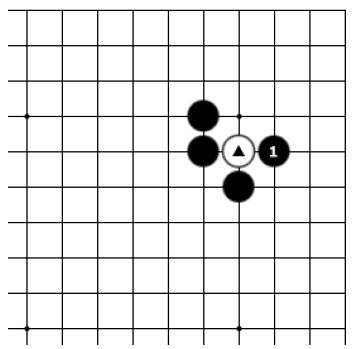
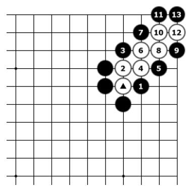
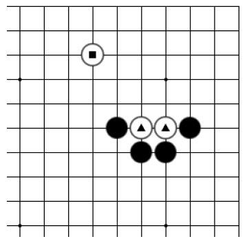
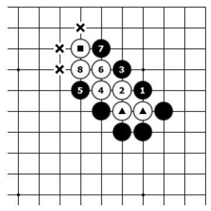
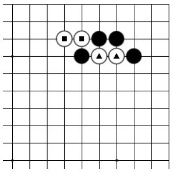
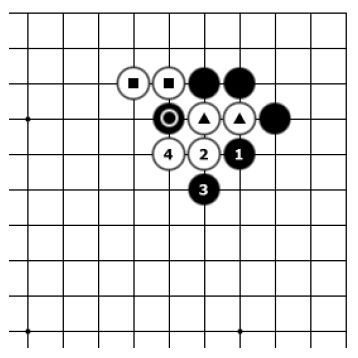
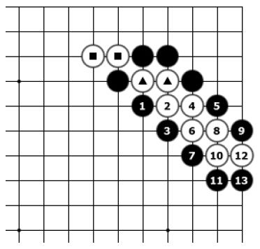
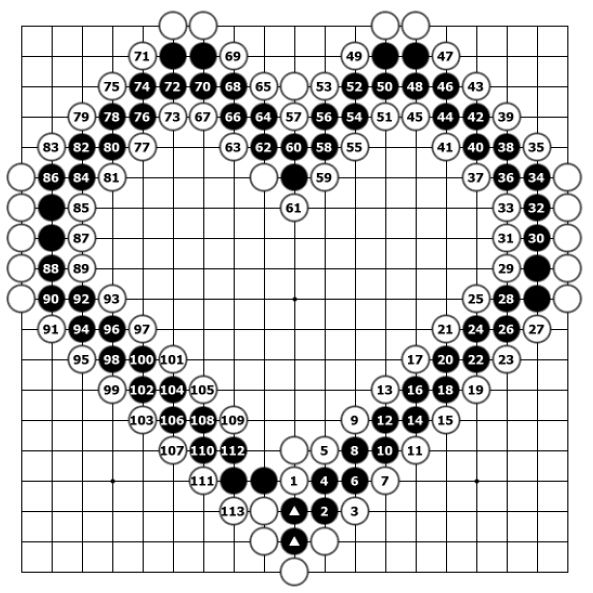

第六节 征子（扭羊头）
下子后，打吃对方的棋子，对方长出时只有两口气，己方再迎头堵住，一直打到对方没有地方可逃，最后把对方的棋子吃掉，这种吃子的方法就叫作“征子”，也叫“征吃”，俗称“扭羊头”。
征子时要保持己方的全部棋子都有两口或两口以上的气。

基本图一

图一
基本图一：黑棋要怎样才能吃掉白▲这颗棋子呢？
图一：黑1打吃方向错误，白2逃跑，▲一子变成了三口气，黑棋已经吃不掉白棋了。

图二

图三
图二：黑1打吃这边正确。
图三：白2如逃跑，黑3继续打吃至13，可成功吃掉白棋数子，黑1这种打吃方法称为“征子”。

基本图二

图一
基本图二：黑棋要怎样才能吃掉白▲两颗棋子呢？注意白■一子的接应。
图一：黑1打吃，白2逃，黑3再打，至白8，白棋被征的棋子和旁边■一子连接起来了，变成了三口气，黑棋不能继续打吃白棋了，自己反而留下了好多断点，这样黑棋就失败了。
白棋在征子路线上的■一子称为“接应子”。当对方有接应子时，不能征子。

图二

基本图三
图二：黑1避开白棋的接应子，从这边征吃是正确的选择，白2如逃跑，黑3继续打吃，至13提，黑棋成功运用征吃的手法吃掉了白棋数子。
基本图三：黑棋要怎样才能吃掉白▲两颗棋子呢？注意白棋旁边有■两子接应。

图一

图二
图一：黑1从这边征方向错误，没有避开白■的接应子，白2跑，黑3继续征，白4在逃跑的同时还打吃着黑棋○一子，黑明显失败。
图二：黑1从这边征是正确的选择，成功地避开了白■的接应子，至13，成功地运用征吃的手法吃掉了白棋的若干棋子。

桃心形征子趣图
使用征子的手法时，先要看对方有没有接应子，如果有，想办法绕过去，如果绕不过去就不要征子了。
接应子通常有两种情况：①在征子路线上；②在要征吃的棋子周围。